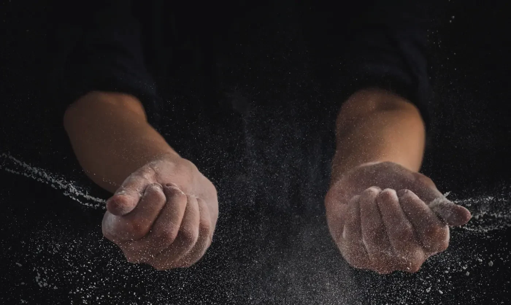
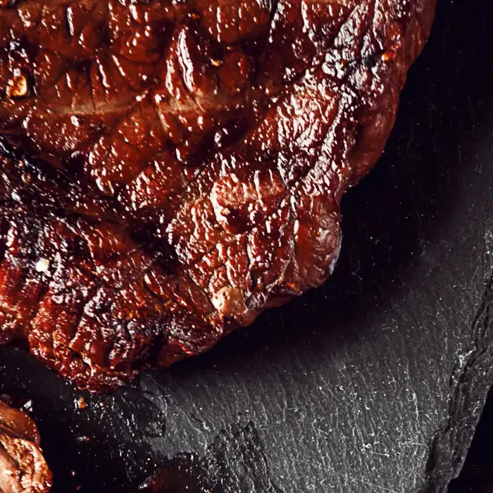
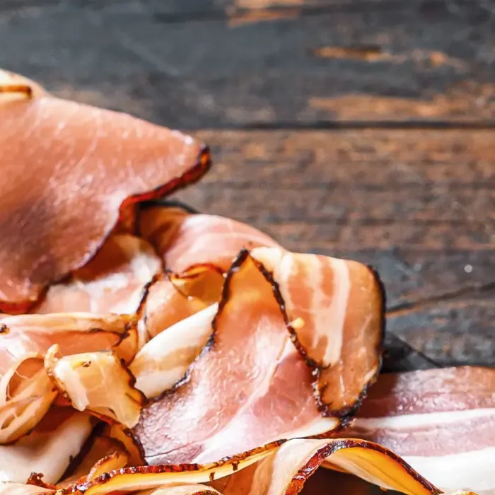
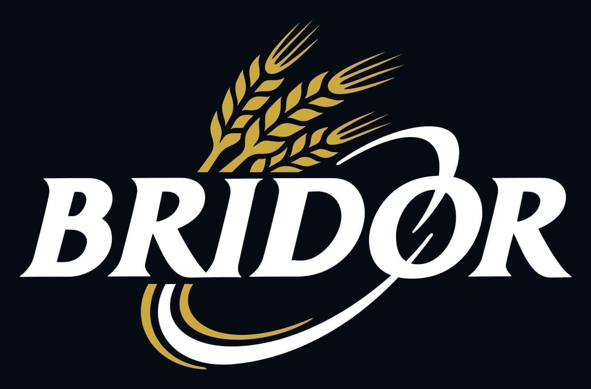

Par téléphone
Notre équipe de télévente vous appelle au jour convenu pour prendre votre commande et vous signaler les promotions et nouveautés. Vous pouvez aussi nous appeler.
05 65 10 00 20
Plus de 4 000 références en frais, surgelé et épicerie pour les restaurants, hôtels, boulangeries et collectivités du Lot et de la Corrèze. Livrées dans votre cuisine, par nos propres camions.
Depuis plus de 20 ans, LVA Distribution accompagne tous les métiers de bouche du Lot et de la Corrèze. Un partenaire local et réactif, avec les outils d'aujourd'hui : commande en ligne 24h/24, application mobile et télévente dédiée.
Viandes, volailles, fromages, crèmerie, plats cuisinés et desserts.
Beurres, farines, ingrédients techniques, viennoiseries et prêts à garnir.
Petits-déjeuners, viennoiseries, jus de fruits, boissons et snacking.
Boissons, café, glaces, snacking et tout le nécessaire du comptoir.
Grands conditionnements, viandes, produits laitiers, surgelés et épicerie.
Charcuteries, fromages à la coupe, crèmerie, plats cuisinés et emballages.
Du frais au surgelé, de l'épicerie aux emballages : une seule commande, une seule livraison. Le frais est notre cœur de métier.



Les grandes marques de la restauration et des producteurs de la région, réunis dans une seule commande.





Par téléphone avec votre interlocuteur habituel, ou en ligne à n'importe quelle heure. Vos tarifs personnalisés s'appliquent partout.
Notre équipe de télévente vous appelle au jour convenu pour prendre votre commande et vous signaler les promotions et nouveautés. Vous pouvez aussi nous appeler.
05 65 10 00 20Commandez 24h/24 depuis votre ordinateur : cadencier, historique d'achats, promotions, suivi des commandes et des factures.
boutique.lva-distribution.frToute la boutique dans votre poche : recommandez vos articles habituels en un clic, depuis la cuisine ou la réserve.
Livré par nos propres camions frigorifiques, sur des tournées fixes, plusieurs fois par semaine selon votre commune : nous consulter. La chaîne du froid est tenue de notre entrepôt jusqu'à votre chambre froide.
Depuis notre entrepôt de Rignac, à côté de Gramat, nos camions livrent les professionnels du Lot et du bassin de Brive, au cœur de la vallée de la Dordogne.
LVA Distribution vend uniquement aux professionnels : restaurants, boulangeries et pâtisseries, hôtels et campings, cafés et bars, collectivités, traiteurs, boucheries et épiceries. L'ouverture d'un compte se fait sur simple demande, par téléphone au 05 65 10 00 20 ou par le formulaire de contact.
Nous livrons depuis notre entrepôt de Rignac, à côté de Gramat : tout le nord du Lot (Rocamadour, Gramat, Padirac, Saint-Céré, Martel, Bretenoux, Biars-sur-Cère, Souillac…), Figeac et Cahors, ainsi que Brive-la-Gaillarde et la Corrèze. Les communes en limite de Dordogne et d'Aveyron sont étudiées au cas par cas.
Nous livrons plusieurs fois par semaine, en tournées fixes. Les jours de passage dépendent de votre commune : nous consulter.
Trois possibilités : par téléphone avec notre équipe de télévente, sur la boutique en ligne boutique.lva-distribution.fr (24h/24), ou sur l'application LVA Distribution (iPhone et Android). Vos tarifs personnalisés s'appliquent partout.
Plus de 4 000 références : viandes et volailles, canard, crèmerie, fromages, charcuterie, boulangerie et viennoiserie, surgelés, épicerie, boissons, emballages et produits d'hygiène.
Nous travaillons notamment avec Rougié, Elle & Vire, Président, Isigny Sainte-Mère, Candia, Debic, Bridor, Vandemoortele, Callebaut, Andros et Jean Floc'h, ainsi qu'avec des producteurs régionaux comme le Rocamadour AOP.
Un commercial vous rappelle, vous présente nos tarifs et organise votre première livraison.